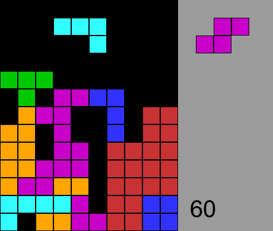
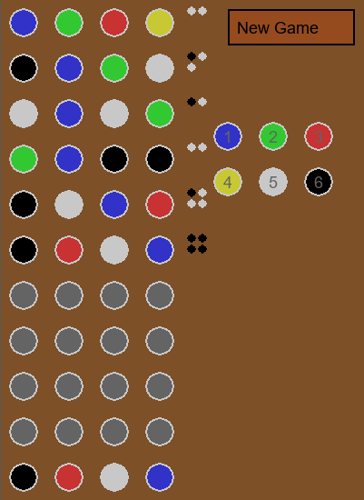
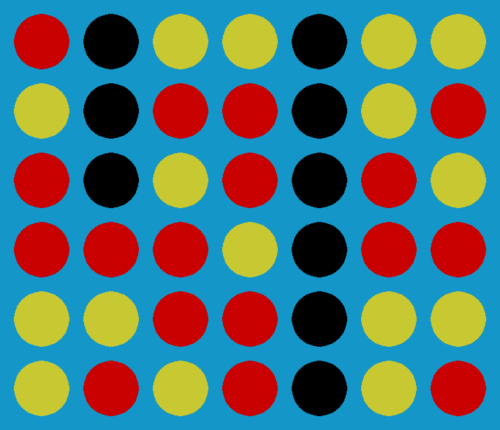
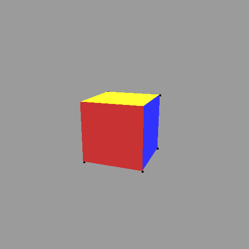
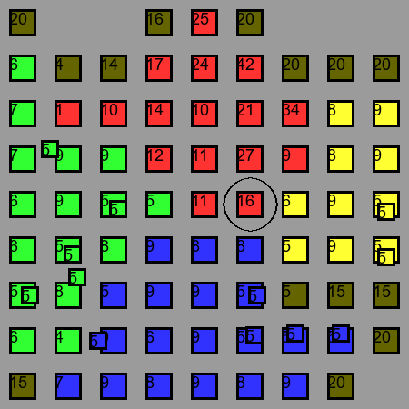
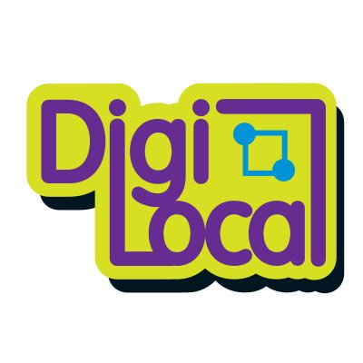
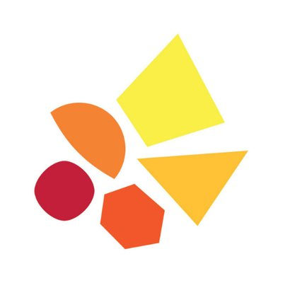

Tetris

A fan favourite of my DigiLocal games. It plays like classic Tetris: accumulate as high a score as possible by filling rows with blocks that fall from the ceiling.
Press the left and right arrow keys to control the horizontal movement of the falling block, up to rotate it and down fall faster. As your score increases so too does the speed of the game.
Mastermind

The objective is to guess the colour and position of four randomly generated coloured circles. To make a guess click a circle on the top unfilled row and press 1-6. Each number corresponds to a colour as indicated by the key on the right side of the window. 0 clears the selected circle.
Once a row has been filled you can press space to make your guess. The game will indicate how close your guess is at the end of the row:
- Each black dot indicates that a circle was of
the correct colour and in the correct position.
- Each white dot indicates that a circle was of the correct colour and in the wrong position.
You have 10 attempts to guess the correct colours. Upon winning or losing the game will display the correct solution.
Sudoku Solver
Solves Sudoku puzzles up to those that are rated "hard". Clicking on a square will select it, and entering a number from 1-9 will enter that value into the square. Each time the user input a number the program will eliminate redundant candidates to solve the puzzle.
I wasn't happy with the solver, so its in the process of being improved. When finished I'll update the info here
Untangle

The objective of Untangle is to click and drag the nodes of a network until none of the edges are crossed.
Once a puzzle is completed, press space to progress to a harder puzzle.
Connect4

Another DigiLocal favourite, get a four-in-a-row either horizontally, vertically or
diagonally to win.
To make a play press 1-7 and a coloured disk will appear in the corresponding column.
This is a two player game so it may not be too compelling if played by yourself.
Cube

Cube was a challenge I set myself when I was new to Python. I wanted to see if I could display a 3D object on a screen from scratch using only the 2D tools in Pygame. I was successful, but there are currently two issues:
- If two polygons were to clip through eachother, one of the polygons would be drawn over the other
- An object that is behind the camera will appear on screen
Domination

The first project I ever made for DigiLocal, the objective is to dominate the board by sending waves until they have all been conquered.
You are the red player. Click red square to select it, and press 1 while holding the mouse over another square to send a wave to try and capture/reinforce it.
Line of Sight
Like Cube, Line of Sight was more a challenge I set myself rather than than something I intended to be a complete game. I wanted to see if I could create a line of sight in a 2D space.
I was successful, so I set myself a follow-up challenge: to have line of sight in a 2D space, but to have the program remember what the player character has already seen.
I was successful again, albeit at the expense of performance. Taking a look at the code reveals a number of improvements I could make should I get the chance.
This project needs tweaking, will update later
Sam Matthews
Aspiring Software Developer
Dark Theme Enthusiast
About Me
Hello, this is my personal site that I created to both learn and demonstrate what I've learned. It's currently unfinished but I'm working on it all the time and I'm very much open to feedback on what doesn't work or what could be improved.
I want to pursue a career in software development because I gain satisfaction from solving problems and creating things that other people can use and benefit from. I enjoy learning and sharing what I've learned with other likeminded people.
Volunteering

DigiLocal - Digital Ambassador
September 2019 to Present
Assisting young people at weekly coding clubs:
- Providing tuition, supervision and support
- Assisting with problem solving and debugging code
- Designing project guides for the children to use
- Provided support at the NASA Space Apps Challenge 2019
- Assisting with online clubs since COVID

September 2019 to November 2019
Introducing and educating people with disabilities in the use of basic
IT to enhance their daily experience:
- Teaching clients how to use a mouse, keyboard and touchscreen
- Safe use of the internet including email and online shopping
Python Projects
For the past 18 months I've been teaching myself Python. Here are some of the projects I've completed both as I've been learning to code and as contributions for DigiLocal
Click on each image for more information about each project
Untangle
Education
University of Southampton (2015 - 2019)
Diploma of Higher Education in Mathematics
A-level (2013 - 2015)
- Maths - A*
- Further Maths - A
- Computing - C
GCSE (2011 - 2013)
8 GCSE's A* - C, including A* in Maths and C in English
Work in Progress
To Do
- Python project section is mostly finished. The functionality is there, but I need to finish all the links, images and descriptions
- include a link to CV
- Fix the menu so that it display properly when window is resized.
- Add a close button to each project description, currently the tab closes when it is clicked
Wishlist
- Slick animations for mouseovers, windows, etc
- Different themes
- Different displays for phones
Changelog (temp)
02-06-21
01-06-21
- Begun working on changing the appearance on side menu based on window width. Current plan is to have the side menu appear on the left side when window width >= 1000. If 1000 > width then the menu should appear on top. There are a few kinks to work out at the moment.
22-05-21
- Clicking a python project image now brings up a description
21-05-21
- Education Section now has content
- Changed the Python images, and added more of them
- The names of the projects appear when you mouseover them
14-05-21
- Added to about me
- Added links for DigiLocal and LC
- Added Python Project Pictures
- Added Education Section
- Altered the style some more
13-05-21
- Began reworking the websites theme and putting content on one page,
with the navigation bar instead moving to the different sections on
the page.
05-05-21
- Added the volunteering page
- Added the changelog
- Added some more Python projects
- Changed the layout of Python projects page
- Added some python project images